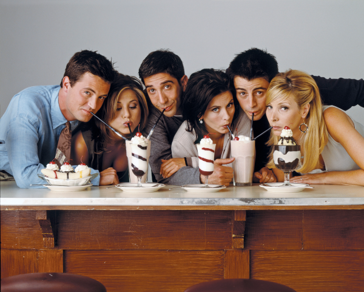

Friends 프렌즈
1994년에 시작해서 2004년까지 NBC에서 인기리에 방영되었던 미국의 시트콤이다. 뉴욕 맨해튼[2]을 배경으로 6명의 친구들의 삶과 우정을 다룬 훈훈하고 코믹한 내용의 시트콤이다. 시트콤의 대명사처럼 여겨지지만 때로는 시간의 일치나 공간의 일치 등 연극적인 시도를 하기도 했다.
실로 엄청난 인기를 누리며 시즌 10까지 제작되었다. 에피소드의 수는 무려 236개. 어느 정도의 인기였냐 하면, NBC는 시즌 10 마지막 회의 시청자 수를 약 5,246만 명(!)[3][4]으로 추산했다고 한다. 이 마지막 회에 삽입된 30초짜리 광고 단가는 2백만 달러(약 24억원)이었다고 한다.[5] 실제로 가장 평균적으로 인기가 많았던 시즌은 시즌 8로, TV 쇼 차트 순위에서 1위를 차지하는가 하면 평균 시청 가구 수가 2천 4백만 가구에 달했다. 《프렌즈》가 종료되면서 시트콤의 시대가 끝났다는 평가까지 나왔을 정도.《프렌즈》의 인기에 힘입어 오프닝 주제가인 The Rembrandts의 <'I'll be there for you>도 엄청난 인기를 끌었다.
21세기가 훨씬 지난 지금에 와서 봐도 이게 20년 전의 감각이 맞나 싶을 정도다. 물론 배우들의 헤어 스타일이나 옷차림을 보면 20년 전의 작품이 맞다. 이를테면, 초반부 시즌에서 라운드 티를 입고 옷자락을 바지 속에 넣는 지금보면 웃음거리만 될 법한 패션이 난무한다. 또한 초반에는 등장인물들이 삐삐를 쓰다가 후반 시즌에는 휴대 전화가 등장하고, 챈들러가 노트북으로 둠을 플레이하기도 한다.
더 자세한 내용은 클릭